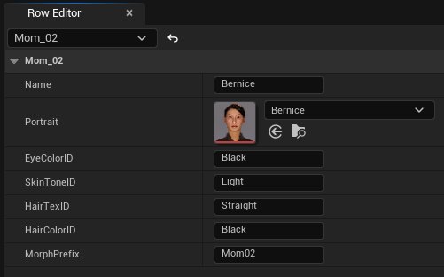
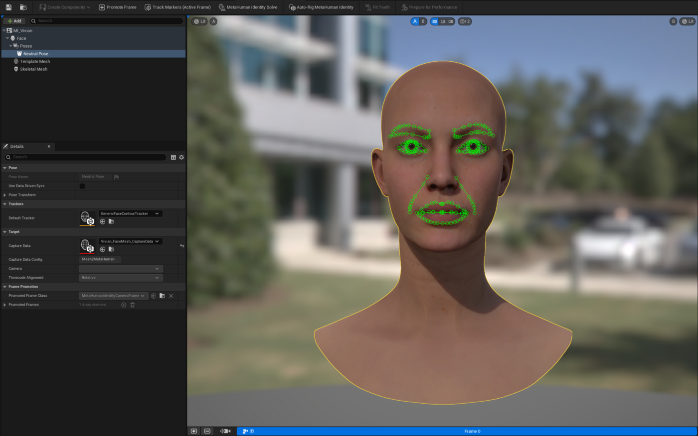
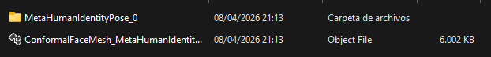
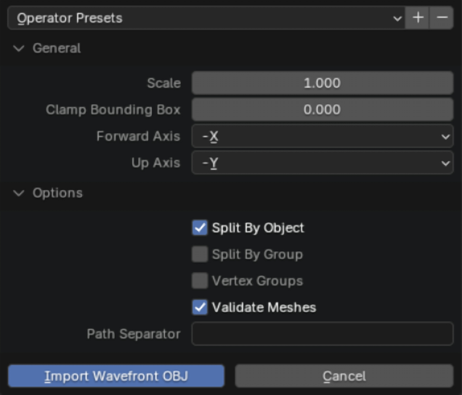
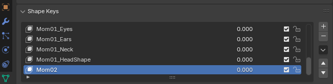
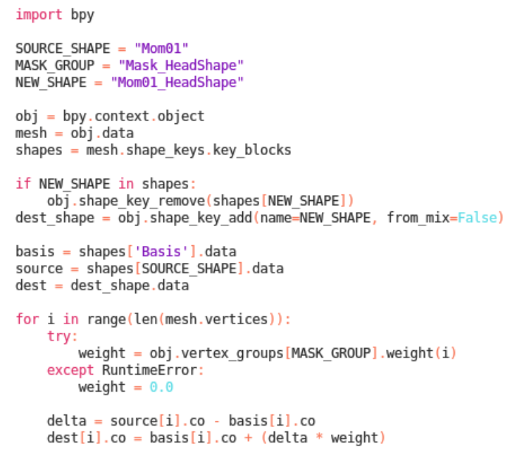
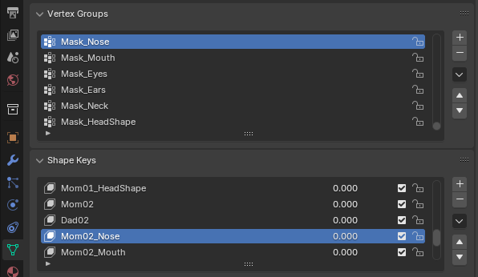
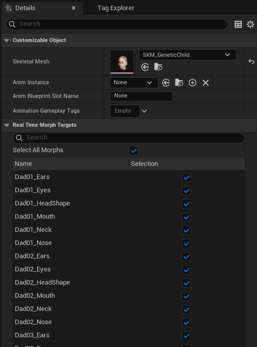
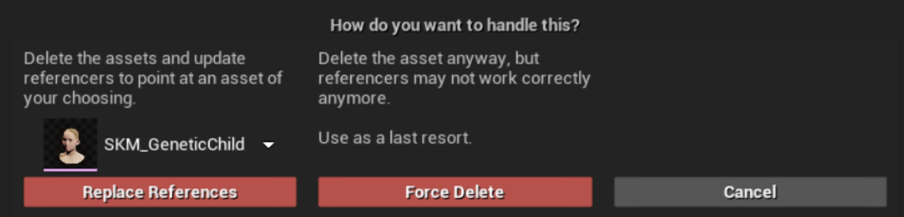

The first step is to register the new parent's basic genetic data in the system's data tables.
Open the DT_Parents data table and add a new row for each new parent model you want to integrate.
Enter the corresponding data: name, image, eye color, skin tone, hair texture, and hair color.
Leave the MorphPrefix variable empty for now — it gets filled in during step 04.
To determine which ID to enter for each field, refer to the available options in the corresponding reference tables: DT_EyeColor, DT_SkinTone, DT_HairTexture and DT_HairColor. If you need greater variety, add new rows and data to these tables.

Registering a new parent's genetic fields in DT_Parents.
02
Facial geometry extraction
Unreal Engine 5
The project includes a GeneticChild_Template.blend file containing the exported base model,
configured vertex groups, and morph targets for the example parents.
Using a custom child model
If you are using a custom child model instead of the one provided with the template, complete the following preparation before starting Stage 2.
First, conform the model in Unreal Engine by following the workflow described below. Then, export it to Blender and import it alongside the original rigged child model.
Transfer the vertex weights from the original model to the conformed mesh using the Data Transfer modifier, bind it to the original armature using Armature Deform,
and recreate the facial vertex groups (eyes, nose, mouth, neck, ears, and headshape). Once these steps are complete, continue with Stage 2.
To ensure all new models share the same vertex topology and can be interpolated with the base model, extract a normalized mesh from each one:
Create a new MetaHuman Identity component for each new parent you want to integrate.
Open the component and go to Create Components → From Mesh, selecting the Skeletal Face Mesh component of the corresponding parent model.
Make sure the face is looking forward and centered. Click Promote Frame, then Track Markers (Active Frame). Verify that the generated markers (green points) correctly follow the facial features, and reposition any misaligned ones manually before exporting.
Open the Unreal Engine command console and enter mh.Identity.ExportMeshes 1. Then click the MetaHuman Identity Solve button.
Locate the resulting .OBJ mesh inside the project's Saved folder, in a subfolder with the same name as the component.

Tracked markers on the active frame.

Exported normalized mesh via console command.
03
Morph target generation & segmentation
Blender
In this stage, the parents' facial proportions are transferred to the child model using vertex masks to isolate each facial feature.
Open the provided GeneticChild_Template.blend file and import the .OBJ files of the parent meshes generated in the previous step, using the import settings shown below.

Import settings for the parent .OBJ meshes.
Select the imported meshes, set their scale to 0.01, and apply the transformation with Ctrl + A → Scale.
Align the parent model as closely as possible with the child's base model and apply the transformation with Ctrl + A → Location. Make sure both rotation and position are set to (0,0,0).
While holding Shift, first select the child's base mesh (Base_Mesh) and then the parent mesh. In the Properties panel, open the Shape Keys drop-down menu and select Join as Shapes.
A new general Shape Key is added to the list. Give it a descriptive name, then delete the parent mesh from the scene — it's no longer needed. Repeat for the remaining parent models.

Joining the parent mesh as a new shape key on the base child.
To generate independent morph targets for each facial region, open Blender's Scripting workspace and paste the automation script provided with the template.

The segmentation script, ready to run per vertex group.
In the script, set SOURCE_SHAPE to the name of the newly created parent's general morph.
Set MASK_GROUP to the name of the vertex group you want to process, visible under Vertex Groups (e.g. Mask_Nose, Mask_Mouth).
Set NEW_SHAPE to the name of the new specific morph, using the Dad(number)_ or Mom(number)_ prefix so Unreal Engine recognizes it.
Run the script once per MASK_GROUP.

SOURCE_SHAPE, MASK_GROUP and NEW_SHAPE set for one facial feature.
Once all specific morphs have been generated, remove the parents' general morphs from the list (e.g. Dad02, Mom02).
In the scene hierarchy, enable visibility of the Child_FaceMesh root component so the model exports together with its bones.
Select the entire Child_FaceMesh object and its components, then go to File → Export → FBX. Enable Selected Objects, select only Armature and Mesh under Object Types, and enable Animation before exporting.
04
Mutable system integration
Unreal Engine 5
Finally, the new model and its deformation parameters are linked to Mutable.
Return to Unreal Engine, drag the new .FBX file into the Content Browser, and import it using the default settings. This generates a new Skeletal Mesh.
Open the new Skeletal Mesh, assign the MI_HeadSynthesized_Baked material (in the Amelia folder) to its material slot, and save.
Open CO_Child_Genetics in the Mutable folder. Within the graph, locate the HEAD section and replace the old Skeletal Mesh (SKM_GeneticChild) with the newly imported asset.
In the node's Details panel, go to Real Time Morph Targets and enable the checkboxes for the new morph targets (disabled by default). Save and compile CO_Child_Genetics.

Enabling the new morph targets on the Mutable node.
Open DT_Parents again and, in the MorphPrefix column, enter the exact prefix used when creating the morphs in Blender (e.g. Dad01, Mom01).
Finally, in the Content Browser, right-click the old base Skeletal Mesh and select Delete.
Important: before confirming the deletion, a reference consolidation window will appear. Select your new Skeletal Mesh and click Replace References to prevent reference-linking errors.

Replacing references before deleting the old base Skeletal Mesh.